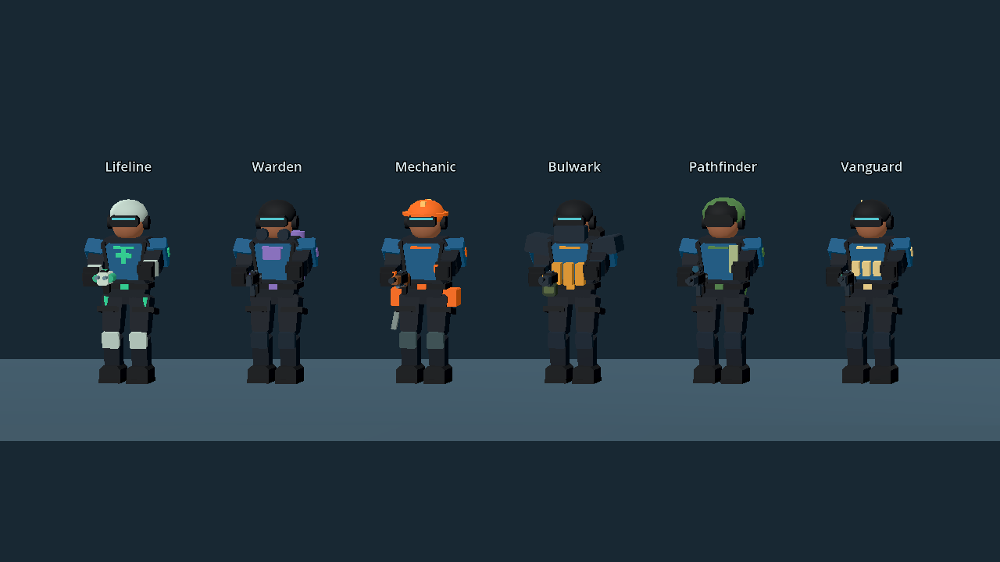

WINDOWS · LOCAL NETWORK · PLAYABLE ALPHA
Internal N Crush
함께 지키고, 함께 돌파하세요.
6개 병과와 5가지 게임 모드로 즐기는 내부망 FPS. 같은 네트워크에서 최대 32명이 함께 플레이하고, 혼자서는 난이도를 골라 봇과 연습하세요.
v0.3.0 · ZIP 압축 해제 후 실행 · Python / Godot 편집기 설치 불필요

시작하기
- ZIP을 모두 압축 해제합니다.
- InternalNCrush.exe를 실행합니다. pck 파일도 같은 폴더에 두세요.
- 한 명이 방을 만들고, 다른 사람은 방 검색 또는 IP 입력으로 접속합니다.
- 장비를 고른 뒤 방장이 시작합니다.
목표에 맞춰 플레이
팀 데스매치 · 개인전 · 제한 부활 · 거점 점령 · 설치/해체
병과, 스킬 ON/OFF, 무한 공격 탄약, 중간 참가, 다음 경기 팀 재편성을 방장이 설정합니다.
봇과 연습하기
봇 연습에서 하 · 중 · 상 난이도와 3/7/15/31봇, 모드와 맵을 선택합니다.
봇은 장애물을 우회하며 점령·설치·해체, 회복·수리와 장비 사용을 수행합니다. 체력과 탄약, 목표 상태에 따라 행동을 바꿉니다.
이번 버전에서 달라진 점
기본 체력은 100, 기본 방어구는 0입니다. 6개 병과 모델과 27종 장비, 걷기·달리기·앉기·재장전·피격 동작을 추가하고 창고 통로와 항구 엄폐물을 배치했습니다.
이동 속도와 연사에 따라 정확도가 떨어지고, 멈추거나 정조준하면 회복됩니다. 연발 무기는 초반 수직 상승 뒤 좌우로 뻗는 자체 T자 반동을 사용하며 십자선은 실제 탄 퍼짐과 연동됩니다.
병과·장비 변경은 다음 부활에 적용됩니다. 일반 모드는 장비 선택이 무료이고, 크레딧은 설치/해체 모드 구매 시간에 사용합니다.
기본 조작
WASD 이동 · Shift 달리기 · Ctrl 앉기 · Space 점프
왼쪽 클릭 발사 · 오른쪽 클릭 정조준 · R 재장전 · 1 주무기 · 2 보조무기
3 가젯 · 4 추가 가젯 · 선택 후 클릭으로 사용
F 스킬 · Q 의료 회복탄 · G 가젯 즉시 사용
E 상호작용 · B 장비 선택 · Tab 점수판 · Esc 메뉴
일반 감도와 정조준 감도를 따로 조절할 수 있습니다. 화면 오른쪽 위에 FPS와 핑이 표시됩니다.
실행 환경과 검증
다운로드 후 외부 인터넷 없이 실행됩니다. 내부망에서 PC 간 통신이 허용되어야 하며 UDP 27888·27889를 사용합니다. 모든 참가자는 같은 버전으로 실행하세요.
규칙·회귀·AI·조준·목표 수행 검사 130개와 별도 ENet 서버/클라이언트의 부활 후 사격, 32개 동시 접속을 확인했습니다. 실제 Windows 여러 대의 LAN과 특정 내장그래픽 성능은 아직 확인이 필요합니다. 그래픽·연출과 봇 팀 전술은 계속 다듬는 개발 버전입니다.